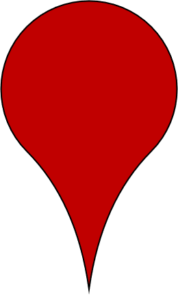

<!DOCTYPE html>
<html>
<head>
	
	<title>Mobile tutorial - Leaflet</title>

	<meta charset="utf-8" />
	<meta name="viewport" content="width=device-width, initial-scale=1.0, maximum-scale=1.0, user-scalable=no" />
	<link rel="stylesheet" href="css/leaflet.css" />
    	<link rel="stylesheet" href="css/screen.css" />
	<link rel="stylesheet" href="css/MarkerCluster.css" />
	<link rel="stylesheet" href="css/MarkerCluster.Default.css" />
	<link rel="stylesheet" href="css/tabs.css" />
	<link rel="shortcut icon" type="image/x-icon" href="markers/SNORKEL.png" />
	<script src="js/leaflet.js"></script>
	<script src="js/leaflet.markercluster.js"></script>
	<script src="js/leaflet.markercluster-src.js"></script>
	<script type="text/javascript" src="data/dorsetdives.geojson"></script>
 
</head>
<style>A {text-decoration: none;} </style>
<body>
<div id="box"></div>
<div id='map'></div>

<script>

//Base Maps from Open Street Map
	var map = L.map('map')

	Land = L.tileLayer('https://{s}.tile.osm.org/{z}/{x}/{y}.png', {
		maxZoom: 15,
		minZoom: 9,
		attribution: 'Map data &copy; <a href="https://www.openstreetmap.org/copyright">OpenStreetMap</a> contributors, ' +
			     'Imagery © <a href="https://www.mapbox.com/">Mapbox</a>',
		id: 'mapbox/streets-v11',
	}).addTo(map);

//Google Satellite maps

	Satellite = L.tileLayer('http://mt0.google.com/vt/lyrs=s&hl=en&x={x}&y={y}&z={z}', {
		attribution: '&copy; <a href="https://about.google/brand-resource-center/products-and-services/geo-guidelines/#required-attribution">Google </a> contributors'
	}),

//DORIS seabed map for Dorset
	DORIS = L.tileLayer('https://doris.s3.amazonaws.com/newallbathy/{z}/{x}/{y}.png', {
		maxZoom: 15,
		minZoom: 9,
		attribution: '&copy; <a href="https://www.dorsetwildlifetrust.org.uk/doris">Dorset Wildlife Trust</a>'
			}),

	
//Marker template
	siteflag = L.Icon.extend({
		options: {
    		iconSize:     [34, 56],
		iconAnchor:   [17, 56],
		shadowUrl: 'markers/icon-shadow.png',
    		shadowSize:   [34, 56],
    		shadowAnchor: [7, 41],  
    		popupAnchor:  [0, -58]
		}
	});


//Dive Site Location
		var DiveSites = new L.geoJSON(flags, {
      		pointToLayer: (feature, latlng) => {
			var DepthMarker = feature.properties.MAXDEPTH;
			if (DepthMarker > 50) {DepthMarker = "50";
			} else if (DepthMarker > 40) {DepthMarker = "40";
			} else if (DepthMarker > 30) {DepthMarker = "30";
			} else if (DepthMarker > 18) {DepthMarker = "18";
			} else if (DepthMarker > 0) {DepthMarker = "0";	
			};
			var SiteMark = new siteflag({iconUrl:'markers/' + DepthMarker + '/' + feature.properties.TYPE + '.png'});
			return L.marker(latlng, {icon: SiteMark})
			},

		onEachFeature: function (feature, layer) {
		Site = '<a href="#img1"><h3>'+ feature.properties.NAME + '</h3>'
		LatDM = feature.geometry.coordinates[1];
		LatD = Math.floor(Math.abs(LatDM))
		LatM= +((Math.abs(LatDM)-LatD)*60).toFixed(3)
		LatDM = LatD + '&deg' + LatM
		
		LonDM = feature.geometry.coordinates[0];
		LonD = Math.floor(Math.abs(LonDM))
		LonM= +((Math.abs(LonDM)-LonD)*60).toFixed(3)
		LonDM = '00'+ LonD + '&deg' + LonM

		Type = ''
		Shore = '&nbsp'
		Snork = '&nbsp'
		Protect = '&nbsp'
		Details = '<b> WGS84: </b>	' + LatDM +'&#39N,&nbsp'+ LonDM + '&#39W' +
		          '<b> Depth: </b> ' + feature.properties.MAXDEPTH + 'm' +
			  '<p style="color:black">' + feature.properties.Description + '</p></a>'
		if (feature.properties.SHORE !== 'Y') {Shore = ""}
		if (feature.properties.SNORKEL !== 'Y') {Snork = ""}
		if (feature.properties.PROTECTED !== 'Y') {Protect = ""}
		var content = Site + Details + Type + Protect + Shore + Snork
		layer.bindPopup(content)
		}
    		})

var Clusters = L.markerClusterGroup({maxClusterRadius:40, disableClusteringAtZoom:15, spiderfyOnMaxZoom: true});

Clusters.addLayer(DiveSites).addTo(map);

map.on('popupopen', function(e) {
		MarkName = e.popup._source.feature.properties.NAME
		MarkName = MarkName.split(" ").join("%20");
		document.getElementById("box").innerHTML = '<a href="#" class="lightbox" id="img1"><span style="background-image: url(data/pics/'+MarkName+'.jpg)"></span></a>'
		})


map.setView([50.6,-2.1],9);

var baseMaps = {
    	"Street": Land,
	"Satellite": Satellite
	};

var overlayMaps = {
	"DORIS": DORIS
	};

L.control.layers(baseMaps, overlayMaps).addTo(map);

var depthlegend = L.control({position: 'topright'});
	depthlegend.onAdd = function (map) {
	var div = L.DomUtil.create('div', 'legend');
	div.innerHTML +=  '<div style="background-color:white; padding:5px;">' +
	'<strong><center> Max Depth </strong> </center>' +
	'   0-18m<br>' +
	'   18-30m<br>' +
	'   30-40m<br>' +
	'   40-50m<br>' +
	'   50m +'

	return div;
	};

	depthlegend.addTo(map);

	var iconlegend = L.control({position: 'bottomleft'});
	iconlegend.onAdd = function (map) {
	var div = L.DomUtil.create('div', 'legend');
	div.innerHTML +=  '<div style="background-color:white; padding:5px;">' +
	'<strong><center> Dive Types </strong></center>' +
	'   Wreck  ' +
	'   Reef  	' +
	'   Drift  ' +
	'   Structure ' +
	'   Shore Dive  ' +
	'   Protected  ' +
	'   Skin Dive '

	return div;
	};

	iconlegend.addTo(map);

	window.addEventListener("orientationchange", function() {
  	alert(window.orientation);
	}, false);

//function onLocationFound(e) {
	//	var radius = e.accuracy / 2;

	//	L.marker(e.latlng).addTo(map)
	//		.bindPopup("You are within " + radius + " meters from this point").openPopup();

	//	L.circle(e.latlng, radius).addTo(map);
	//}

	//function onLocationError(e) {
	//	alert(e.message);
	//}

	//map.on('locationfound', onLocationFound);
	//map.on('locationerror', onLocationError);

	//map.locate({setView: true, maxZoom: 16});

</script>
</body>
</html>


	